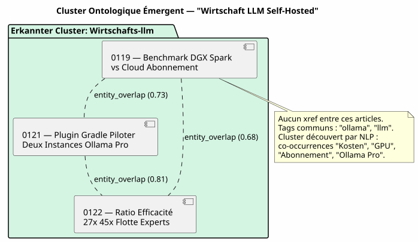

Der Knowledge Graph als Empfehlungs-Engine: Wie ich die chronologisch « verwandten Artikel » getötet habe
Publié le 12 May 2026
- Die Szene: Dienstag, 12. Mai, 17:30
- Die Diagnose: Drei Arten von Beziehungen, die kein Template sieht
- Die Lösung: Ein Gradle-Pipeline, kein Hot-LLM-Aufruf
- Die emergente Ontologie: Wenn die Artikel sich zusammen schließen, ohne sich zu kennen
- Der DAG-Vertrag : Wer wen wichtig findet
- Was Wir Gewinnen (Und Was Wir Nicht Gewinnen)
- Perspektiven: Der Blog als öffentliches Wissensgraph
- Fazit : Das Dateisystem weiß, was die Vorlage ignoriert.
- Referenzen
Sie lesen einen Artikel über die Integration von pgvector mit LangChain4j. Am Ende der Seite, JBake schlägt Ihnen « Verwandte Artikel » vor. Sie klicken. Es handelt sich um einen Artikel über… die Konfiguration. von Kitty Terminal. Was ist der einzige gemeinsame Punkt zwischen ihnen? Sie wurden veröffentlicht weniger als fünfzehn Tage Abstand. Das ist keine Empfehlung. Es ist ein als getarnter Kalender redaktionell.
Die Szene: Dienstag, 12. Mai, 17:30
Ich lese einen meiner Artikel erneut — dieser über das Knowledge Graph als Werkzeug zum Verständnis der Codebasis. Der Inhalt ist dicht: Knoten, Kanten, Communities, PlantUML, Onboarding. Ein Artikel 15-minütige Lesetechnik, die mobilisiert`graphify-gradle`, plantuml-gradle, und die Konzepte der Graphentopologie.
Unten auf der Seite schlagen die « Verwandte Artikel » mir vor:
-
Ein Artikel über Firebase Contact Form (0113)
-
Ein Artikel über den Eager/Lazy-Mechanismus (0108)
-
Ein Artikel über die Migration von Gradle‑Skript → Plugin (0102)
-
Ein Artikel über die Kumulierung von Ollama Pro-Abonnements (0120)
Drei dieser vier Artikel haben keinen Bezug zum Knowledge Graph. Sie sind da, weil sie die letzten veröffentlichten sind — zeitliche Nähe, nicht semantische Nachbarschaft
Ich schaue mir das Template an`post.thyme`:
<!-- Articles connexes (liens internes SEO) -->
<th:block th:each="post,postStat : ${published_posts}">
<th:block th:if="${!post.uri.equals(content.uri) and postStat.index lt 4}">
...
</th:block>
</th:block>`published_posts`ist eine chronologische Liste.`postStat.index lt 4`nimmt sie Die ersten vier, die nicht der aktuelle Beitrag sind. Das ist alles. Keine Logik der Ähnlichkeit. Kein Begriff des Inhalts. Nur eine Schleife.`for`verkleidet als Empfehlung.
|
Das ist kein Bug von JBake. Das ist das Standardverhalten von allem Statischer Site-Generator: Die Liste der Posts ist flach und nach Datum sortiert. Die Vorlage macht, was sie kann, mit dem, was sie hat. |
Aber das ist kein Grund, es zu akzeptieren.
Die Diagnose: Drei Arten von Beziehungen, die kein Template sieht
Mein Artikelkorpus — 23 Beiträge in 4 Monaten — hat eine reiche Struktur, die die chronologische Vorlage überschreibt vollständig:
-
Explizite Referenzen : Ich verwende`xref:`massiv in meinen Artikeln.
Der Artikel 0122 verweist auf 0106 (knowledge graph) und 0116 (compartimentage) epistemisch). Diese Links sind redaktionelles hard linking — ich habe absichtlich entschieden, diese Konzepte zu verbinden.
-
Gemeinsame Tags : jeder Artikel hat`:jbake-tags:`. Der Artikel über
Graphify + PlantUML (0105) a`gradle, graphify, plantuml, knowledge-graph`. Der Artikel über das Knowledge Graph (0106) hat knowledge-graph, graphify, plantuml. Drei gemeinsame Tags von sieben — 43% Überschneidung.
-
Ko-occurrente benannte Entitäten : « pgvector », « RAG », « embedding
erscheinen zusammen in vier verschiedenen Artikeln. « LangChain4j » , Ollama », « plugin Gradle » in sechs anderen. Das sind keine Tags — das sind emergente Muster des Korpus, die nur ein NLP kann erkennen.
Heute nutzt meine Seite keine dieser drei Schichten. Sie nutzt Die Nullschicht: die Einfügereihenfolge in einer Java-Liste.
Die Lösung: Ein Gradle-Pipeline, kein Hot-LLM-Aufruf
Die erste Versuchung wäre, während des Bake einen LLM aufzurufen: « Für Dieser Artikel findet die drei ähnlichsten Artikel im Korpus. Machen Sie das nicht.
|
Ein LLM-Aufruf zu jedem`./gradlew bake`Kostet Zeit, Geld, und Führt Nichtdeterminismus in deinem Build ein. Die Antwort des LLM kann zwischen zwei Builds wechseln, ohne dass der Inhalt sich geändert hat. Ihr CI wird nicht reproduzierbar, werden deine Tests flaky. |
Die Lösung ist deterministisch: eine Gradle‑Pipeline, die den Graphen vorher berechnet. von Ähnlichkeit und speichert es in`graph.json`. Die Vorlage liest das Ergebnis — er löst nie eine Berechnung aus.
Die Architektur: Bakery importiert Graphify, nicht Engine
Das ist der wichtigste architektonische Punkt. Die Versuchung wäre die Zusammenarbeit verkabeln in`engine/build.gradle.kts`: engine angewendet graphify für den Scan, bakery für den Bake, und engine macht die Brücke zwischen beide.
Das ist ein Anti-Muster. Engine ist ein Verbraucher‑Terminal — es wendet an von Plugins implementiert es keine Geschäftslogik. Die Regel ist: Die Beweislast liegt beim proprietären Plugin.
Der DAG-Vertrag wird eingehalten: bakery (N2) importiert graphify (N0), N2 > N0, keine Verstöße. Engine (N3) importiert Bakery (N2), N3 > N2, OK.
Engine hat keine Codezeile, die referenziert`graph.json`, relatedPosts, oder jede andere Vorstellung von Ähnlichkeit. Er wendet bakery an, Punkt. Die Die Zusammenarbeit ist intern bei bakery.
Die Pipeline : Scan → Graph → Vorlage
Hier ist der komplette Pipeline in drei Schritten:
-
Scan (graphify) :`graphify-plugin`scanne den Workspace. In seiner
In seiner aktuellen Form, erkennt es bereits die`xref:`zwischen`.adoc`und die stellt aus in`graph.json`wie der edges des Typs`reference`.
Wir bereichern es für den redaktionellen Inhalt: * Analysiere die JBake-Metadaten`:jbake-tags:`, :jbake-description:) von jedem`.adoc`Des Blogs * Berechnet die Co-Occurrences von Tags → Kanten`tag_cooccurrence`mit Gewicht * Extrahiert die benannten Entitäten aus den Beschreibungen mit TF-IDF → edges`entity_overlap` * Fügt einen Abschnitt ein`blog_articles`im`graph.json`existierend (empty)
// Extrait de l'enrichissement graphify pour le blog
fun enrichBlogSection(graphJson: File, blogDir: File): GraphJson {
val articles = blogDir.listFiles { f -> f.extension == "adoc" }
.map { parseJbakeMetadata(it) }
val nodes = articles.map { ArticleNode(it.slug, it.title, it.tags) }
val edges = mutableListOf<GraphEdge>()
// Couche 1 : xref (déjà fait par scanWorkspace)
// Couche 2 : co-occurrences de tags
for (a in articles) {
for (b in articles) {
if (a.slug == b.slug) continue
val common = a.tags.intersect(b.tags)
if (common.isNotEmpty()) {
edges.add(GraphEdge(
source = a.slug,
target = b.slug,
type = "tag_cooccurrence",
weight = common.size.toDouble() / (a.tags.size + b.tags.size)
))
}
}
}
return graphJson.copy(
blogArticles = BlogSection(nodes, edges)
)
}-
Bake (bakery) : im Moment des`./gradlew bake`, `BakeryPlugin`Bett
`graph.json`und löst die zugehörigen Artikel für jeden Beitrag.
// BakeryPlugin — résolution des articles connexes
fun resolveRelatedPosts(
currentSlug: String,
graph: GraphJson,
maxResults: Int = 4
): List<RelatedPost> {
val edges = graph.blogArticles.edges
.filter { it.source == currentSlug || it.target == currentSlug }
return edges
.sortedByDescending { it.weight }
.take(maxResults)
.map { edge ->
val relatedSlug = if (edge.source == currentSlug) edge.target else edge.source
graph.blogArticles.nodes.first { it.slug == relatedSlug }
}
}-
Template`post.thyme`) : Das JBake-Modell erhält jetzt eine Map
strukturiert anstatt einer flachen chronologischen Liste.
<!-- Articles connexes basés sur le Knowledge Graph -->
<th:block th:if="${relatedPosts != null and !relatedPosts.empty}">
<section class="mt-5 pt-4 border-top">
<h2 class="h4 mb-3">Articles connexes</h2>
<th:block th:each="related : ${relatedPosts}">
<div class="mb-2">
<a th:href="${content.rootpath} + ${related.uri}"
th:text="${related.title}" class="fw-semibold"></a>
<br/>
<small class="text-muted">
<th:block th:each="reason,iterStat : ${related.reasons}">
<span class="badge bg-light text-dark"
th:text="${reason}"></span>
</th:block>
</small>
</div>
</th:block>
</section>
</th:block>Die Vorlage ist die gleiche — sie weiß nicht woher die Daten kommen. Nur der Vertrag zwischen bakery und JBake hat sich geändert:`published_posts`(Liste chronologisch) wird`relatedPosts`(gewichtete Karte nach dem Graphen).
|
Das Abzeichen « Grund » (Beispiel:`xref 0122`, |
Chronologisches Fallback
Si `graph.json`ist nicht vorhanden (build lokal ohne vorherigen Scan, erst Bereitstellung, CI, die den Graphify-Scan noch nicht integriert hat), das Template muss sich geschmeidig abbauen :
fun resolveRelatedPosts(currentSlug: String, graph: GraphJson?): List<RelatedPost> {
if (graph != null && graph.blogArticles != null) {
return resolveFromGraph(currentSlug, graph)
}
// Fallback chronologique — même comportement qu'aujourd'hui
logger.warn("[bakery] graph.json absent — fallback chronologique")
return resolveFromChronology(currentSlug)
}Das Standardverhalten entspricht dem aktuellen Verhalten. Der Empfehlungsmotor ist eine schrittweise Verbesserung — kein incompatible Änderung.
Die emergente Ontologie: Wenn die Artikel sich zusammen schließen, ohne sich zu kennen
Die interessanteste Schicht ist die dritte: die emergente Ontologie. Artikel, die nicht zitiert werden, die nicht die gleichen Tags haben, aber die von derselben Sache sprechen ohne es zu wissen.
Nehmen wir ein konkretes Beispiel. Drei Artikel aus meinem Korpus:
-
0119 — Benchmark DGX Spark vs Cloud Abonnement LLM
-
0121 — Gradle-Plugin zur Steuerung von zwei Ollama Pro-Instanzen
-
0122 — Ratio Effizienz 27x 45x Flotte Experten KI
Diese drei Artikel haben keinen xref untereinander. Ihre tags ne se sie decken sich nur zu 20 % (« ollama », « llm » gemeinsam). Aber ein leichtes NLP auf den Beschreibungen offenbart sich ein offensichtlicher Cluster: „Kosten“, „Abonnement“, Cloud », « GPU », « API-Schlüssel », « Ollama Pro », « Effizienz », « Verhältnis
Sie bilden ein ontologisches Cluster: l’économie du LLM self-hosted vs cloud. Dieser Cluster wird nirgendwo erklärt. Er entsteht aus dem Corpus.

Dieser ontologische Cluster wird zu einem Edge Composite in`graph.json`:
{
"source": "0119-benchmark-dgx-spark",
"target": "cluster:economie-llm",
"type": "entity_cluster",
"weight": 0.73,
"metadata": {
"clusterLabel": "Économie LLM Self-Hosted vs Cloud",
"commonEntities": ["coût", "GPU", "abonnement", "Ollama Pro", "ratio"],
"articlesInCluster": [
"0119-benchmark-dgx-spark",
"0121-ollama-pro-deux-instances",
"0122-ratio-efficacite-flotte-experts"
]
}
}NLP ist absichtlich leicht — TF-IDF + Cosine Similarity auf den Beschreibungen. Kein Bedarf an BERT, kein Bedarf an einem Sprachmodell. Der Korpus umfasst 23 Artikel, die Ähnlichkeitsmatrix passt in ein JSON-Datei von 50 KB.
|
Die Stärke des NLP kommt nicht von der Raffinesse des Algorithmus. aber der Größe des Korpus und der Qualität der Beschreibungen. Eine `:jbake-description:`gut geschriebene von 150 Zeichen enthält mehr von Signal für TF‑IDF, dass es sich um einen vollständigen Artikel von 3000 Wörtern handelt. |
Der DAG-Vertrag : Wer wen wichtig findet
Das ist der Punkt, an dem die architektonische Disziplin sich auszahlt. Der DAG N0→N3 definiert in`engine/build.gradle.kts`gibt eine einfache Regel: Kein Projekt ist wichtig ein Projekt höherer Ebene.
| Consumer-Plugin | Importiertes Plugin | Konsumentenniveau | Importiertes Niveau | Gültig ? |
|---|---|---|---|---|
bakery-gradle |
graphify-gradle |
N2 |
N0 |
✅ N2 > N0 — OK |
Motor |
bakery-gradle |
N3 |
N2 |
✅ N3 > N2 — OK |
Motor |
graphify-gradle |
N3 |
N0 |
✅ Technik OK, aber konzeptionell falsch — die Zusammenarbeit ist intern bei bakery |
Motor appliziert Bäckerei. Bäckerei appliziert graphify. Das ist alles. Wenn eines Tages Ich möchte den Vector-Store-Codebase (N1) hinzufügen, um zu recherchieren cross-corpus Semantik, bakery importiert sie auch. Engine ändert sich nicht.
|
Das Muster ist: das Plugin N2 ist der Hub seiner eigenen Abhängigkeiten. Die Engine N3 ist kein Hub – sie ist ein Terminal, das Hubs anwendet. |
Was Wir Gewinnen (Und Was Wir Nicht Gewinnen)
Der Hauptvorteil ist redaktionell, nicht technisch:
| Vorher | Nach |
|---|---|
Verwandte Artikel = 4 letzte Beiträge |
Verwandte Artikel = top 4 nach Gewicht im Knowledge Graph |
Leser liest aus RAG → Empfehlung Kitty Terminal |
Leser liest RAG → Empfehlung pgvector, Chunking, Vektorspeicher |
Keine Transparenz über das Warum |
Abzeichen`xref 0122`, |
JBake-Standard, kein Aufwand, kein Wert |
deterministische, reproduzierbare, testbare Gradle-Pipeline |
Keine Lernkurve für den Leser |
Der Leser entdeckt die Topologie meines Inhalts |
Was wir nicht gewinnen :
-
Es ist kein « echt » Empfehlungsmotor (keine kollaborative
Filtern, kein A/B-Testing, kein Feedback-Loop)
-
Die Qualität hängt vom Reichtum der JBake-Metadaten ab — wenn Ihre
Beschreibungen sind leer, TF-IDF sieht nichts
-
Der NLP ist offline — die neuen Artikel werden nur bis
nächster Scan (das ist gut: das Build bleibt deterministisch)
Perspektiven: Der Blog als öffentliches Wissensgraph
Diese Funktion eröffnet eine breitere Perspektive: und wenn?cheroliv.com Wurde er selbst zu einem navigierbaren Wissensgraphen?
Artikel sind Knoten. Tags sind Gemeinschaften. xref sind die Kanten. Der Leser liest keinen einzelnen Artikel mehr — er navigiert durch ein Wissensgraph dessen aktueller Artikel der Einstiegspunkt ist
Stellen Sie sich eine Startseite vor, die nicht die chronologische Liste anzeigt , der letzten Posts, aber eine Karte des Korpus : ontologische Cluster, Pivotartikel (die mit den meisten Kanten), Lesepfade empfohlen „Wenn Sie den Artikel über Graphify gemocht haben, lesen Sie als Nächstes der auf dem Knowledge Graph als Werkzeug des Verständnisses )
Das ist kein Blog mehr. Es ist ein semantisches Atlas.
Und das ist keine Science-Fiction. Le`graph.json`existiert bereits. Ihm fehlt nur die Navigationsschnittstelle.
Fazit : Das Dateisystem weiß, was die Vorlage ignoriert.
Was ich am Dienstagabend entworfen habe, ist der Ersatz einer Heuristik. faul (die chronologische Reihenfolge) durch eine getreue Darstellung des Struktur meines Korpus (Knowledge Graph).
Die Vorlage`post.thyme`geändert sich nicht. Was sich ändert, ist, was wir gibt ihm zu essen. Zuvor: eine Java-Liste, sortiert nach`date`. Nach : ein gewichteter Graph aus drei Analyseschichten — Kreuzverweise, Mitvorkommen Tags, und emergente Ontologie mittels NLP
Die Schleife ist geschlossen. graphify scannt den Arbeitsbereich. Bakery liest das Das Diagramm nährt das Template. Der Leser sieht Empfehlungen. relevant. Und engine — der Dirigent — weiß nicht einmal dass All das existiert.
Das ist es, die richtige Architektur. Jedes Plugin macht eine Sache. Und der Verbraucherterminal muss nicht wissen, wie.
Referenzen
-
Artikel 0105 — Graphify in einen Gradle-Workflow integrieren
-
Artikel 0106 — Der Knowledge Graph als Werkzeug des Verstehens
-
Artikel 0121 — Plugin Gradle Steuern Zwei Instanzen Ollama Pro
-
Artikel 0122 — 27× bis 45× wirksamer: Flotte von KI-Experten